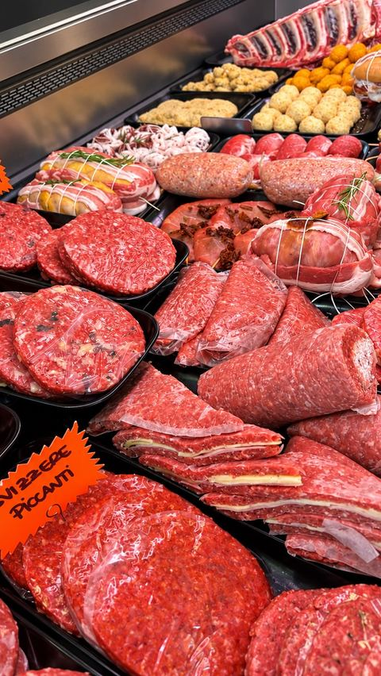
Pronto da cuocere
Hamburger, arrosti e tagli preparati ogni giorno. Anche piccanti, se vi piace.
Prato · Via Zelindo Mannelli, 27
Il banco del macellaio la mattina, il tavolo a pranzo e a cena. Scegliete il taglio, noi lo cuciniamo come piace a voi.
Il banco
Dalla bistecca da grigliare al macinato per l'hamburger, dai tagli pronti da cuocere alla porchetta.

Hamburger, arrosti e tagli preparati ogni giorno. Anche piccanti, se vi piace.
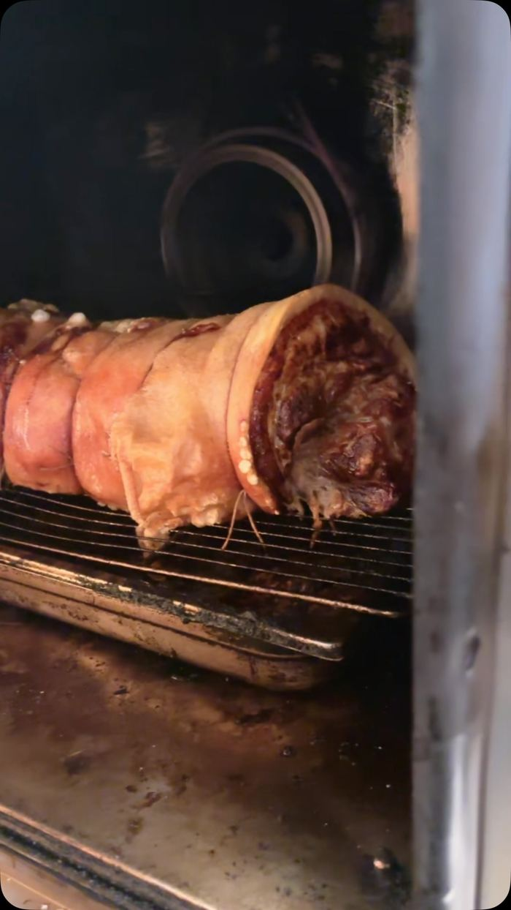
Il nostro piatto simbolo: cotta lentamente, con la crosta ben croccante.
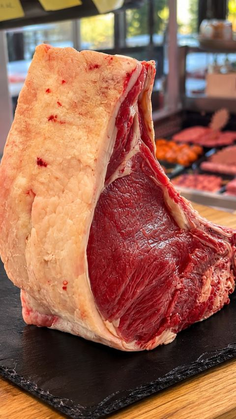
Tagli selezionati, alcuni frollati in casa. Potete assaggiare più stagionature a confronto.
La specialità
La tartare è il nostro marchio di fabbrica: carne tagliata al momento e condita in tanti modi, dalla più classica alle versioni più ricche.
Alcune delle nostre: 24 Karati · Mugnegno · Toscanaccia · Pulcinella · Tartufata · Ciao Nini
Prenota per la tartare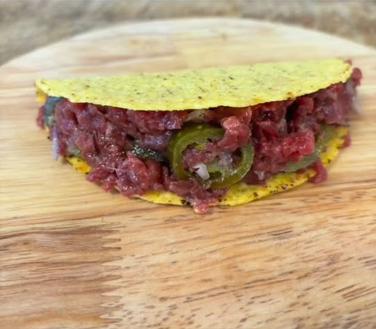
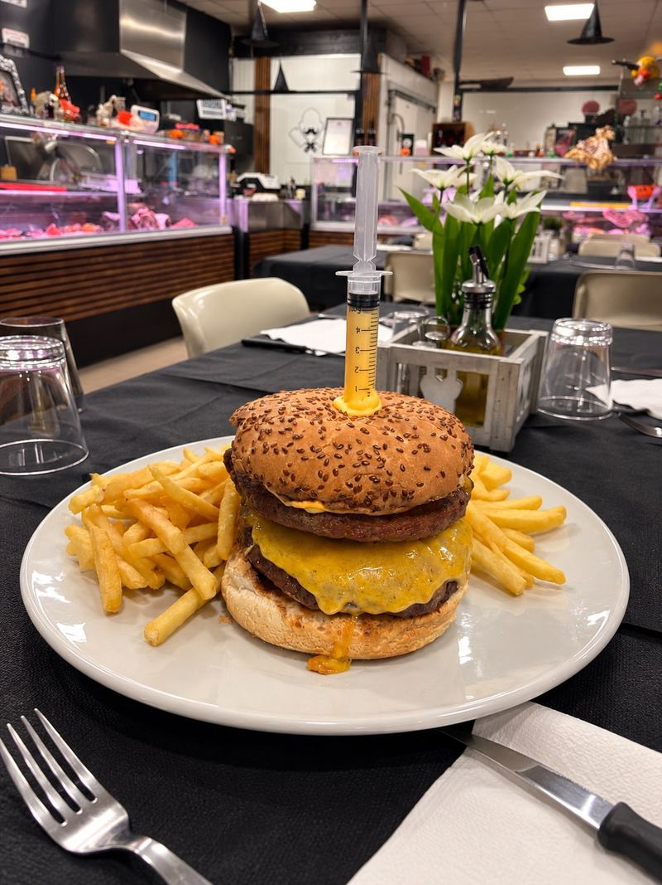
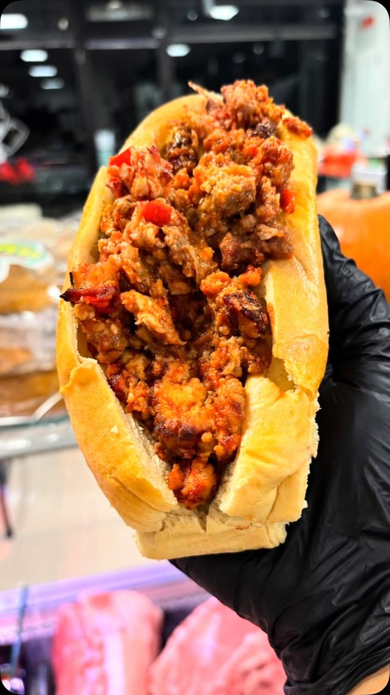
Pranzo e cena
I tavoli sono accanto al banco: la carne passa dal macellaio al piatto, senza intermediari. Per la cena vi consigliamo di prenotare.
€35
€43
€50
€15
Prezzo fisso a persona. Una bottiglia di vino ogni 4 persone; coperto e caffè inclusi.
Menu e prezzi dal vostro post Facebook del 9 dicembre 2024: da confermare insieme.
Serate ed eventi
Compleanni, serate a tema, cene speciali e feste della birra: in macelleria si organizza. Per informazioni e preventivi scriveteci o chiamateci.
Cosa organizziamo
Le prossime date sono su Instagram.
@macelleriamantelli · 7.200 followerDicono di noi
“Ciccia favolosa dalle tartare alla porchetta, insomma cotto o crudo non fa differenza: tutta di alta qualità.”
Anna G. · Facebook
“Sinceramente era stupendo, il più buono che abbia mangiato.” (sull'hamburger alla festa della birra)
Manuela S. · Facebook
Dove siamo
0574 061553 WhatsApp 347 540 3727
Apri le indicazioni| Lunedì | 9–14 · 17–22 |
|---|---|
| Martedì | 9–14 · 17–22 |
| Mercoledì | 9–14 |
| Giovedì | 9–14 · 17–22 |
| Venerdì | 9–14 · 17–22 |
| Sabato | 9–14 · 17–22 |
| Domenica | Chiuso |
Orari da confermare insieme.
Dai nostri social
Cosa succede in macelleria
Ogni giorno nuovi tagli, ricette e serate: gli ultimi post di Instagram e Facebook compaiono anche qui.
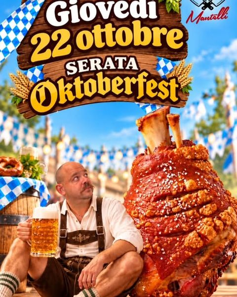
Serata OktoberfestInstagram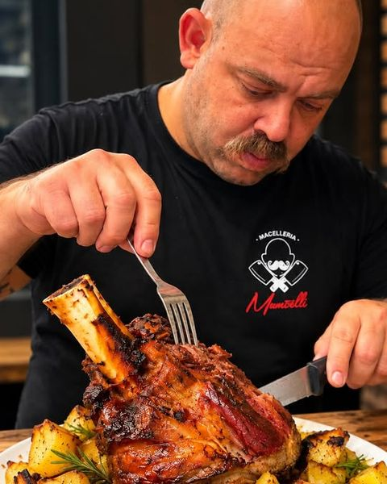
Lo stinco al fornoInstagram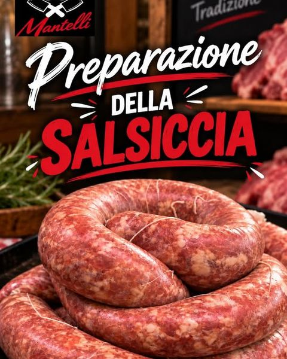
Preparazione della salsicciaFacebook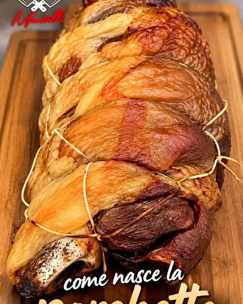
Porchetta di pecoraInstagram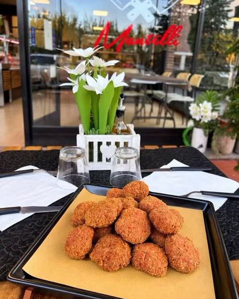
Fritti al tavoloFacebook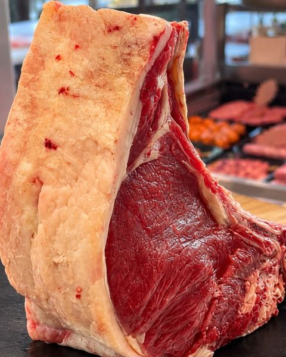
La costata dal bancoInstagram